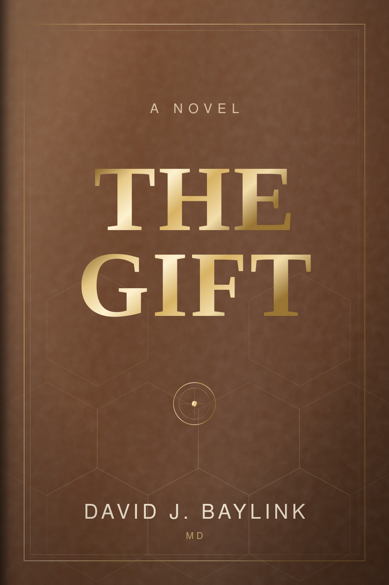

A novel · First edition, 2026
The Gift
Twenty-six chapters. The research is real; almost everything around it is invented. What follows is the table of contents, the author’s note in full, and a word about the science underneath the story.

The story
What the book is about
A physician-scientist arranges a life so that nothing can interrupt the work, and then spends forty years discovering what the work was for.
It begins on a cold March morning in the orange groves above San Timoteo, with a motorcycle, a near-miss at the foot of a driveway, and two imagined headstones — one for the motorcycle enthusiast, one for the hugely successful physician-scientist. Both, the narrator admits, are true of him.
That same morning brings a young man on a Honda who can do the one thing the laboratory cannot, and a reviewer’s letter saying a single finding could not be reproduced. From those two arrivals the novel runs out across four decades: calcium and the slow loss of bone, sepsis, a chase through the Netherlands, an FBI file, verdicts and letters, and a scientific scoreboard that keeps its own accounts.
And running underneath all of it, quietly, a family — a father who never learned to retire, a sister, and a boy named Nikki whose kidneys are failing, and for whom a complete stranger will one day decide to give.
In his own words
Author’s Note
I have spent most of my life at the bench and the bedside, chasing questions that science asks but rarely answers cleanly. This book grew out of that life — the research on sepsis and calcium endocrine investigations described here is real, drawn from work I have pursued for decades, much of it still ongoing.
But this is not a memoir in the strict sense, and I want to be honest with you about that before you begin. The people, relationships, and events surrounding the science have been reshaped, invented, or combined into an autobiographical novel. Some of what happens to the character carrying my name did not happen to me. Some characters are composites; others are drawn wholly from imagination. I made these choices because a life, honestly told, does not always arrange itself into a story — and because some of what mattered most to me deserved a shape that only fiction could give it.
I also want to acknowledge something else plainly. This book was written in close collaboration with AI language models. I directed every chapter — the science, the history, the people, the arc of the story — and I reviewed and revised every page. But much of the prose itself was drafted with that assistance, and I think a reader deserves to know that before turning the page, not after.
What I hope survives all of this — the fictionalizing, the collaboration, the years it took — is something true underneath: a life spent believing that curiosity, combined with rigor and tenacity, leads to something valuable to humanity. That belief is on the plaque on my office wall, and it is, in its way, the whole of this book.
David J. Baylink
Table of contents
Twenty-six chapters

The bench, and the reason for it
The science behind the story
Real research, invented lives
Bone that quietly gives way with age. Calcium acting as the cell’s messenger. Sepsis, and the long unglamorous arithmetic of a laboratory that runs on grant money the way an engine runs on fuel. These are not inventions of the plot — they are the author’s own field, worked for more than sixty years and worked still.
The novel also reaches forward into the tools that arrived late in that career: gene editing fine enough to find one instruction among billions and write a truer one in its place, and transplantation — tissue typing, immunology, surgery — built out of decades of incremental work by people who will never know the name of the child they saved.
I thought about the two headstones. One read here lies the motorcycle enthusiast. The other read here lies a hugely successful physician-scientist. Both were true of me.Chapter One · The Needle’s Eye